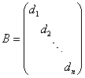
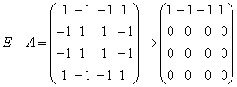
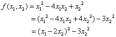

6.1 实二次型及其标准形
一、实二次型的定义
| 先看一个实例： 例1：设有三维列向量及三阶实对称矩阵，计算。 解： 结果是一个由未知量 这样的三元二次齐次多项式，称为一个三元实二次型，引进更一般的n元实三次型的定义。 |
由此可见，n元实二次型与n阶实对称矩阵之间有密切关系，于是可以用第五章中关于实对称矩阵的结论来讨论二次型。 |
|
例2：设二次型，写出 解：由二次型各项系数直接写出对应的对称矩阵 例3：写出由对称矩阵，确定的二次型 解：由A为4阶对称矩阵，对应4元二次型为： |
二、二次型的标准形
|
为了对二次型进行深入的研究，需引入可逆线性变换的概念。
如果对二次型 其中，B仍为对称矩阵，从而是以B为矩阵的二次型，又因为C可逆，则。 上述讨论说明：二次型 |
|
先后这两个二次型的矩阵A与B的关系，称为合同关系。一般地，有
方阵之间的合同关系具有下述性质： （1）反身性，对任一n阶方阵， （2）对称性，如果，则 （3）传递性，如果，，则。 注：对于n阶方阵A和B，我们曾经定义过两种关系： A和B等价指的是存在可逆矩阵P和Q，使得，也就是A与B之间可以经过矩阵的初等变换实现互变，记为 A和B相似指的是存在可逆矩阵P，使 A和B合同，指的是存在可逆矩阵P，使。 由定义可知：两个相似的矩阵必等价，两个合同的矩阵也必等价，但反之都不一定。还要分清“合同关系”与“相似关系”的差别，但是，如存在正交矩阵P，使 |
不难看出，平方和的矩阵B为n阶对角矩阵，即 本章的一个中心问题就是，对给定的n元二次型 |
|
根据第五章第4节中对称矩阵基本定理，我们知道，对于任意一个n阶实对称矩阵A，一定存在n阶正交矩阵P，使得 而这个正交矩阵P就是由A的n个两两正交的单位特征向量所组成的，于是我们也就得到二次型基本定理：
|
|
例5：设四元二次型 解：A的特征多项式： A的四个特征值为 由，可得单位特征向量  ，属于 ，属于
的特征向量满足方程组 由，即应满足方程组，可以由直观 法求出三个两两正交且单位特征向量 于是，有正交矩阵得正交变换，经这个正交变换二次型 |
三、配方法求二次型的标准形
|
上面我们介绍了求二次型 实际上，对给定的二交型 例6：用配方法求的标准形。 解：  作可逆线性变换，即，得 注意：用配方法得到的 |
|
例7：用配方法求的标准形。 解：本题中二次型没有出现平方项，为配出完全平方，我们先作如下可逆线性变换产生平方项。 令 它把原二次型化为： 再作可逆线性变换即 也就有可逆线性变换，则 |
四、二次型的规范形
|
对任意一个n元实二次型，可以有两种方法得到二次型的标准形，由于所作的线性变换不同，标准形也未必相同，例如在例6中，二次型用配方法得到
|
|
例8：设三元二次型
|
|
例9：在以下四个矩阵中，哪些是合同矩阵？哪些是不合同矩阵？ 解：四个矩阵均为对角矩阵，容易看出它们的秩都同为3，而A与C的正惯性指数同为1，所以A与C合同，B与D的正惯性指数同为2，所以B与D合同，但A与B不合同，B与C不合同。 |